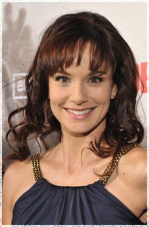

Сара Уэйн Кэллис
 Лори Граймс (актриса Сара Уэйн Кэллис) - жена Рика и мама Карла. Во время зомби апокалпсиса вместе с Карлом и в сопровождении Шейна направляется в предположительно безопасную Атланту, где живут её родители.
Сара Уэйн Кэллис (Sarah Wayne Callies) - американская актриса, родилась 1 июня 1977 года в США в городе Ла Грэндж штат Иллинойс.
На протяжении всей своей карьеры Сара Уэйн Кэллис с лёгкостью совмещала роли на телевиденни и кино, а также игру в театре, тем самым проявив свой талант.
Наиболее известна стала после роли доктора Сары Танкреди в сериале Prison Break (Побег) на канале FOX. Среди её обширных телевизионных ролей можно выделить: роль Джейн в серии ВБ Тарзан, роль второго плана в Queens Supreme, а также участие в качестве гостя в Law & Order: SVU (Закон и порядок: Отдел специальных расследований), Numb3rs (Числа) и LA Dragnet.
В 2009 году Сара снялась в главной роли в сериале Tangled, также являясь со-продюссером этого сериала. В 2010 году она снялась в фильме Lullaby for Pi (Колыбельная для Пи) совместно с Рупертом Френдом и Форестом Уитакером. Примечателен тот факт, что она самостоятельно написала и исполнила песню для саундтрека к этому фильму. Кэллис недавно завершила работу в триллере Faces in the Crowd (Лица в толпе) в котором снялась вместе с Милой Йовович, этот фильм вышел на экраны в 2011 году.
Кэллис имеет степень магистра искусств Консерватории Национального театра.
Наиболее известна зрителям по сериалу Побег (Prison Break) и Ходячие мертвецы (The Walking Dead)